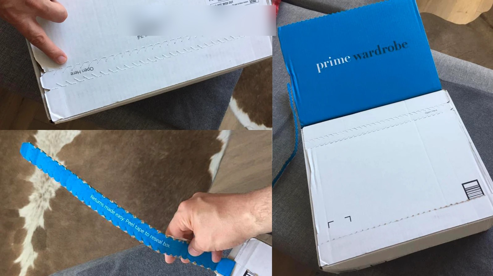
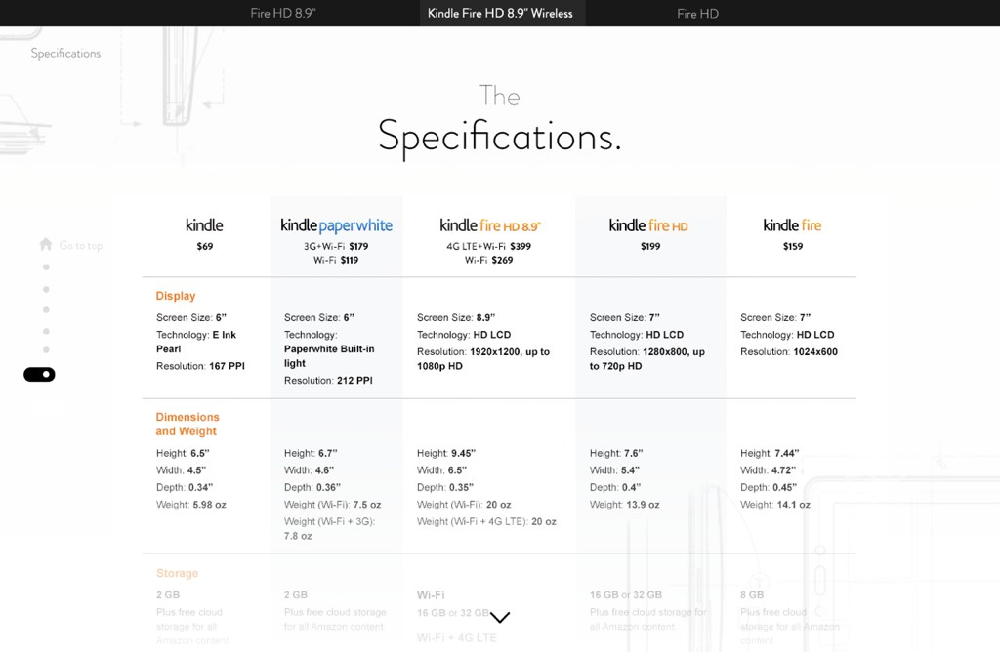

I build design organizations, the operating models they run on, and the AI-native tooling that changes how they work.
Twenty years leading design teams at Oracle Health, eBay, Amazon, Nokia, and Adobe. Below: what each one asked for, what I built, and what it did.
Scroll for the evidence
2024 to present · Director, User Experience Design
Oracle Health
The operating model is the work.

Experience Core, the platform design team that did not exist before I made the case for it, sets the standard for five product organizations and dozens of clinician-facing applications. Thirty-four patterns organized by the clinician's journey. Comps replaced by rules a person or a model can look up. A skill library the designers built for themselves.
The proof: three agents given the same prompt built three different Action Lists without the skill, and three matching ones with it. Concept to testable prototype went from weeks to days.
- 5product organizations
- 8patent filings
- weeks to daysconcept to prototype
- WCAG 2.1 AAas a gate, not a hope
2022 to 2024 · Director of Product Design, Seller Experience
eBay
eBay's first generative AI feature, concept to launch in a year.

Most listings had no description, and buyers almost always chose the item that did. My team designed and shipped the Magical Listing Tool with eBay's AI team: a photo in, title, description, and item specifics out. Thirty percent of daily US app sellers tried it in the first weeks; more than 95 percent kept the draft.
Behind it, seller narratives, Starting, Running, Growing my business, became the org and planning lens, and design got into Product's six-month planning cycle.
- $73Bannual GMV
- 132Mactive buyers
- 25designers, plus research and DPM
- 95%+kept the AI draft
2019 to 2022 · Head of Design and Research
Amazon Photos
Functional is not lovable.

Cloud storage that happened to hold photos, trailing the native apps, underperforming for a Prime-bundled service. We tore it down and rebuilt it, research setting the order: show me my photos, help me find them fast. Tenets agreed with Dev and PM first, so three orgs decided from one set of criteria.
- 6Mmonthly active customers
- 61% to 78%CSAT in six months
- 8 to 19the team, adding research, motion, design technology
2015 to 2019 · Head of Design and Research
Amazon Fashion
Let people try it on first.

Under a tenth of US clothing spend was online, because a detail page is a poor fitting room. Prime Wardrobe took aim at that: I pitched and resourced the design and saw it through to launch. Luxury Stores followed, launched two years after we designed it and remarkably like the original.
- 7 to 20the team, adding program management, design technology, managers
- Prime Wardrobeconcept to launch
2006 to 2015 · THANK YOU Studio, Nokia, Adobe
Earlier
Studios, systems, launches.

Partner and VP of Product Design at THANK YOU Studio, San Francisco and Copenhagen: the Kindle Fire launch and the Fire Phone design system for Amazon, Toyota in-car navigation. Senior Director at Nokia, about 35 people across five cities, the MeeGo design system. Creative Director at Adobe, the Adobe.com redesign.
See the earlier work →Across all of it
How I lead
Design is a business capability, and it earns that standing by being legible to the rest of the company.
- A team contract, written down: what I expect from the team and what they can expect from me.
- Tenets set with partners at the start, so the hard conversations happen once.
- A written definition of done.
- Ownership assigned by pattern, so every designer has something that is theirs.
- Staying hands-on with the tools, because the toolchain is changing and I want to understand it before I ask the team to.
Contact
(415) 606-1720
linkedin.com/in/kevinellisdesign
Seattle, WA